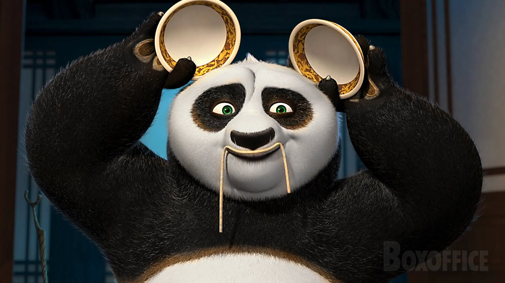

Meu filme favorito é Kung Fu Panda, uma animação da DreamWorks que combina ação, comédia e lições de vida de forma brilhante. A história segue Po, um panda desajeitado que sonha em ser um mestre de kung fu.
O que mais me encanta neste filme são:
Kung Fu Panda me ensinou que todos temos potencial para ser extraordinários, mesmo quando não acreditamos em nós mesmos. A jornada de Po de cozinheiro desastrado a guerreiro dragão é verdadeiramente inspiradora!